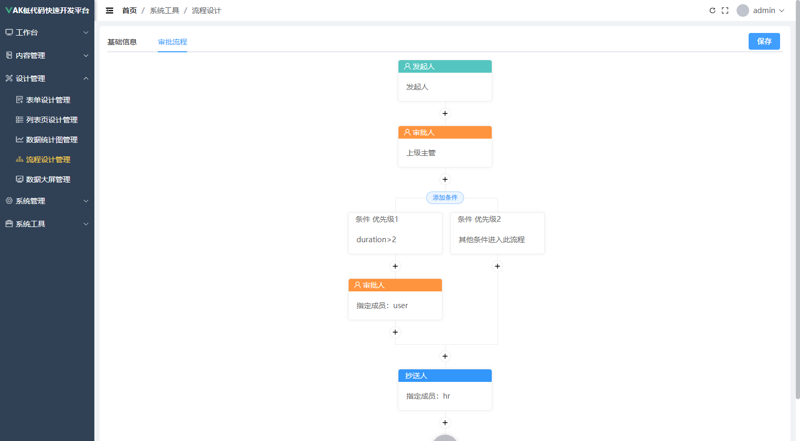
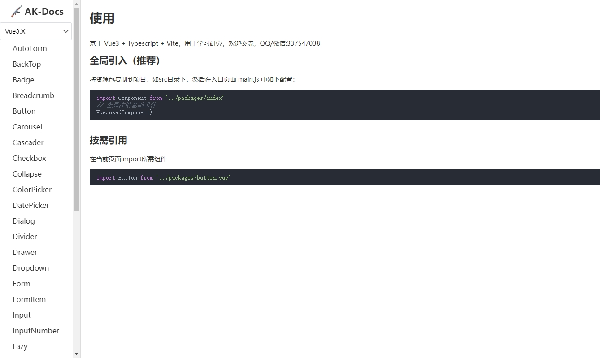

客户关系管理系统
AK 客户关系管理系统是一款以客户为中心，专门为企业销售团队量身定制的工具，其核心目标是帮助企业实现客户信息集中化、业务流程自动化、数据分析智能化
基于ak-design低代码快速开发平台的流程设计器，纯Div+Css布局，代码简洁易读，功能完善，易于扩展。适合二次开发及学习研究
系统的设计流程管理功能允许用户根据自己的需求对设计流程进行个性化定制，无需依赖开发人员即可完成整个设计流程的规划和管理


开源的软件，代码100%开源，保证了您使用的放心，不会留有后门。
系统采用SpringBoot、Maven、MyBaits、Jwt、Mysql、Vue、Element-Plus等前后端分离前沿技术开发。
灵活部署方式，即可部署到云服务器，也可以本地化部署，自主选择，无任何限制。
使用主流技术设计开发，代码简洁易读，注释详细。同时提供二次开发，可以保证不局限于系统自身的功能，方便与其他系统对接
作为开源软件，投入几乎为零，即可快速应用部署，没有任何风险。
高度可用的低代码支持，易扩展，减少重复开发，提升开发效率。